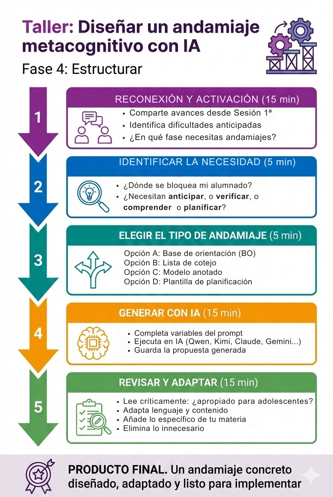
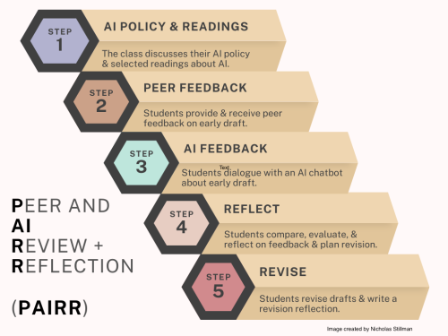

1. Diseñar andamiajes metacognitivos
En esta fase pasaremos al diseño de andamiajes metacognitivos concretos. A través de un taller estructurado en 5 procesos, diseñaréis al menos UN andamiaje específico para vuestra situación de aprendizaje, utilizando IA como asistente y aplicando vuestro criterio para adaptarlo a vuestro alumnado adolescente de ESO o Bachillerato.
ELEMENTOS PEDAGÓGICOS EN ESTA ACTIVIDAD:
- Objetivos de aprendizaje y criterios de éxito explícitos (Dylan Wiliam, estrategia 1).
- Reconexión: activación de conocimientos construidos en Sesión 1.ª (continuidad del proceso formativo y práctica de evocación).
- Aprendizaje situado: no diseñáis “un andamiaje genérico”, sino uno específico para vuestra situación de aprendizaje y vuestro alumnado adolescente.
- IA como asistente pedagógico: genera propuestas estructuradas que requieren vuestra adaptación experta.
- Andamiaje: preguntas guía y plantillas.
- Andamiaje: prompts con variables explícitas (diferentes según el tipo de andamiaje elegido).
- Andamiaje: base de orientación del taller (anticipar, planificar y reducir carga cognitiva).
- Pensamiento crítico: revisión sistemática de propuestas de IA (¿es apropiado para adolescentes?, ¿el lenguaje es claro?, ¿falta algo esencial?).
- Evaluación formadora: herramientas de autorregulación que permiten al alumnado autorregularse y ajustar su proceso.
- Producto tangible: al finalizar tendréis un andamiaje concreto diseñado y personalizado, listo para implementar.
Objetivos de la actividad
Al finalizar este taller, seréis capaces de:
- Reconectar con el trabajo realizado en Sesión 1.ª y compartir avances en el diseño de vuestra situación de aprendizaje.
- Identificar la necesidad específica de andamiaje en vuestra situación de aprendizaje (¿dónde se bloquea habitualmente el alumnado?).
- Seleccionar el tipo de andamiaje apropiado (BO, lista de cotejo, modelo anotado o plantilla) según la función cognitiva necesaria.
- Utilizar IA generativa de forma funcional para generar la primera versión estructurada del andamiaje.
- Evaluar críticamente y adaptar las propuestas de IA a vuestro alumnado adolescente específico (lenguaje, nivel de complejidad, contexto).
- Producir un andamiaje metacognitivo concreto, personalizado y listo para integrar en vuestra secuencia didáctica.
Criterios de éxito
Sabréis que habéis completado satisfactoriamente esta actividad cuando:
✓ Hayáis compartido con compañeros vuestros avances desde la Sesión 1.ª y la fase donde necesitáis andamiajes.
✓ Hayáis identificado UNA tarea compleja concreta de vuestra situación de aprendizaje donde el alumnado necesita apoyo.
✓ Hayáis elegido el tipo de andamiaje apropiado según la necesidad cognitiva (anticipar, autorregular, comprender o planificar).
✓ Hayáis ejecutado el prompt específico personalizando todas las variables con vuestra información real.
✓ Hayáis revisado críticamente la propuesta de IA evaluando apropiación para adolescentes, claridad del lenguaje y especificidad para vuestra materia.
✓ Hayáis adaptado y personalizado el andamiaje: modificado redacción, añadido ítems/campos específicos, ajustado nivel de complejidad.
✓ Tengáis el andamiaje guardado en formato digital o impreso, listo para implementar en vuestra secuencia didáctica.

La actividad se articula en 5 procesos y se cierra con una lista de cotejo:
- Proceso 1.º: Reconexión y activación
- Proceso 2.º: Identificar la necesidad de andamiaje
- Proceso 3.º: Elegir el tipo de andamiaje apropiado
- Proceso 4.º: Usar IA para generar la primera versión
- Proceso 5.º: Revisar críticamente y adaptar
Proceso 1.º: Reconexión y activación (15 min)
Función didáctica. Esta reconexión no es un mero trámite. Retomar el hilo formativo tras el descanso y explicitar dónde anticipamos que el alumnado necesitará apoyo es un acto de anticipación docente experta. Es una práctica de evocación que ayuda a la recuperación de información y a la construcción de la memoria a largo plazo para sustentar el aprendizaje.
Dinámica: reconexión en parejas (8 min)
Cada pareja comparte brevemente:
- ¿Cómo habéis perfeccionado vuestra propuesta tras la Sesión 1.ª? ¿Qué ajustes habéis incorporado al reto o al producto final?
- ¿Cuál es la principal dificultad que anticipáis para implementar el diseño en vuestro contexto real?
- ¿En qué fase específica (probablemente “Explorar”, “Estructurar” o “Aplicar”) pensáis que necesitaréis diseñar andamiajes metacognitivos?
Puesta en común plenaria (7 min)
3-4 voluntarios presentan brevemente al grupo completo:
- Su reto (en 1 frase síntesis)
- Su producto final (¿qué crearán los estudiantes?)
- La fase donde identifican necesidad de andamiaje y por qué
Proceso 2.º: Identificar la necesidad de andamiaje (5 min)
Cada docente identifica UNA tarea compleja de su situación de aprendizaje (generalmente en las fases “Explorar”, “Estructurar” o “Aplicar”) donde anticipa que el alumnado adolescente tendrá dificultades o se bloqueará habitualmente.
Preguntas guía para identificar la necesidad:
| Pregunta de diagnóstico | Tipo de andamiaje sugerido |
|---|---|
| ¿En qué momento del proceso suele bloquearse mi alumnado porque no sabe por dónde empezar o se siente abrumado por la complejidad? | → Base de orientación (BO) Necesitan ANTICIPAR el proceso completo. |
| ¿En qué tarea el alumnado olvida pasos esenciales o entrega trabajos incompletos sin darse cuenta? | → Lista de cotejo Necesitan VERIFICAR paso a paso mientras trabajan. |
| ¿Qué producto deben crear sin tener claro “cómo es un buen ejemplo” o qué nivel de calidad se espera? | → Modelo anotado Necesitan COMPRENDER antes de producir. |
| ¿En qué momento el alumnado improvisa sin planificar y luego el resultado es desorganizado o incoherente? | → Plantilla de planificación Necesitan ORGANIZAR su pensamiento antes de ejecutar. |
Consejo práctico. Pensad en vuestro alumnado adolescente real. ¿Dónde están los “agujeros negros” de vuestras secuencias didácticas actuales? Esos momentos en los que decís: “No entiendo cómo no se han dado cuenta de que faltaba esto” o “Otra vez se han liado con el orden de los pasos”. Ahí es donde necesitáis un andamiaje explícito.
Proceso 3.º: Elegir el tipo de andamiaje apropiado (2 min)
Según la necesidad identificada en el proceso 2.º, cada docente elige diseñar UNO de los siguientes tipos. Podéis consultar el glosario de andamiajes que aparece más abajo para más detalles.
- Opción A: Base de orientación (BO) → Infografía o diagrama de flujo
- Opción B: Lista de cotejo (checklist) → Criterios de realización secuenciales
- Opción C: Modelo anotado → Ejemplo deconstruido
- Opción D: Plantilla de planificación → Organizador gráfico con campos estructurados
En el siguiente proceso encontraréis 4 prompts diferentes, uno para cada opción. Usad únicamente el que corresponda al andamiaje que habéis elegido.
Proceso 4.º: Usar IA para generar la primera versión (15 min)
A continuación, se proporcionan 4 prompts específicos (uno para cada tipo de andamiaje). Cada docente usará únicamente el prompt que corresponda a su elección del proceso 3.º
Recomendación. Copiad el prompt completo de vuestra opción, completad todas las variables destacadas en rojo con vuestra información específica, y pegadlo en vuestra IA preferida (ChatGPT, Claude, Gemini, Perplexity, Kimi, Qwen…). No dejéis variables sin completar.
OPCIÓN A: Diseñar una base de orientación (BO)
Necesito crear una base de orientación (infografía o diagrama de flujo) para ayudar a mi alumnado adolescente de [NIVEL: ESO/Bachillerato] en [MATERIA] a realizar esta tarea compleja:
[DESCRIPCIÓN DETALLADA DE LA TAREA COMPLEJA]
La tarea implica estos pasos principales:
- [PASO 1]
- [PASO 2]
- [PASO 3]
- [PASO 4]
- [PASO 5 - si procede]
- [PASO 6 - si procede]
Las dificultades habituales de mi alumnado adolescente son:
- [DIFICULTAD 1]
- [DIFICULTAD 2]
- [DIFICULTAD 3 - opcional]
Tarea:
Genera una estructura de base de orientación en formato de diagrama de flujo o infografía que incluya:
- Título claro y motivador dirigido a adolescentes
- 4-6 fases secuenciales con verbos de acción en imperativo (Analiza..., Identifica..., Diseña..., Comprueba...)
- En cada fase: 1-2 preguntas metacognitivas que el alumno debe hacerse:
- “¿He comprendido…?”
- “¿He verificado…?”
- “¿Tiene sentido…?”
- “¿He considerado…?”
- Indicadores visuales de secuencia (flechas, números, conectores)
- Lenguaje directo en 2.ª persona, apropiado para adolescentes (evitar lenguaje académico excesivamente formal).
Nota importante. Solicitamos la estructura textual (contenido de cada fase, preguntas, secuencia lógica). Luego, se solicitará la generación de un prompt para el diseño visual con IA.
Proceso para este prompt:
| Acción | Tiempo | Qué hacer |
|---|---|---|
| 1. Generar | 4 min | Completa todas las variables del prompt con tu información específica y ejecútalo en tu IA. |
| 2. Leer | 3 min | Lee la propuesta completa evaluando: ¿la secuencia es lógica?, ¿el lenguaje es apropiado para adolescentes?, ¿las preguntas metacognitivas son realmente útiles? |
| 3. Guardar | 1 min | Guarda la estructura textual generada. La adaptarás en el proceso 5.º |
OPCIÓN B: Diseñar una lista de cotejo (checklist)
Necesito crear una lista de cotejo (checklist) para que mi alumnado adolescente de [NIVEL: ESO/Bachillerato] en [MATERIA] autoevalúe esta tarea:
[DESCRIPCIÓN BREVE DE LA TAREA]
Los criterios de realización esenciales que deben verificar son:
- [CRITERIO ESENCIAL 1]
- [CRITERIO ESENCIAL 2]
- [CRITERIO ESENCIAL 3]
- [CRITERIO ESENCIAL 4]
- [CRITERIO ESENCIAL 5 - si procede]
El proceso tiene estas fases principales:
- [FASE/PROCESO 1]
- [FASE/PROCESO 2]
- [FASE/PROCESO 3]
- [FASE/PROCESO 4 - si procede]
Tarea:
Genera una lista de cotejo de 10-15 ítems organizados en procesos secuenciales (proceso 1, proceso 2, proceso 3...).
Requisitos de cada ítem:
- Debe empezar con “He…” para favorecer la autorregulación (ejemplo: “He revisado...”, “He incluido...”, “He verificado...”).
- Debe ser verificable con Sí/No o Hecho/No hecho (nada ambiguo).
- Debe referirse a acciones concretas y observables.
- Debe estar redactado en positivo (no “He evitado...”, sino “He incluido...”, “He verificado...”).
- El lenguaje debe ser claro para adolescentes (evitar tecnicismos innecesarios o lenguaje excesivamente académico).
Formato deseado:
Proceso 1: [NOMBRE DEL PROCESO]
□ He…
□ He…
□ He…
Proceso 2: [NOMBRE DEL PROCESO]
□ He…
□ He…
…
Proceso para este prompt:
| Acción | Tiempo | Qué hacer |
|---|---|---|
| 1. Generar | 4 min | Completa todas las variables del prompt y ejecútalo. |
| 2. Revisar | 3 min | Verifica: ¿todos los ítems son verificables, sí/no?, ¿el lenguaje es claro?, ¿están organizados en secuencia lógica?, ¿falta algún paso esencial? |
| 3. Guardar | 1 min | Guarda la lista generada. La adaptarás en el proceso 5.º |
OPCIÓN C: Crear un modelo anotado
Necesito crear un modelo ejemplar de [TIPO DE PRODUCTO: ensayo, informe, resolución de problema, presentación, análisis...] para que mi alumnado adolescente de [NIVEL: ESO/Bachillerato] en [MATERIA] lo analice ANTES de crear el suyo propio.
El producto debe demostrar:
- [ELEMENTO CLAVE 1 que debe incluir el producto]
- [ELEMENTO CLAVE 2]
- [ELEMENTO CLAVE 3]
- [ELEMENTO CLAVE 4 - si procede]
Los criterios de calidad más importantes que quiero que vean en el modelo son:
- [CRITERIO DE CALIDAD 1: ej. coherencia argumentativa, rigor en el análisis...]
- [CRITERIO DE CALIDAD 2]
- [CRITERIO DE CALIDAD 3]
- [CRITERIO DE CALIDAD 4 - opcional]
Tarea:
- Genera un ejemplo breve, pero completo y de calidad excelente del producto (máximo 300 palabras o equivalente según el tipo de producto). El ejemplo debe ser realista y apropiado para el nivel cognitivo de adolescentes en [ESO/Bachillerato].
- Crea anotaciones explicativas al margen o entre paréntesis que señalen:
- Qué partes clave identificar
- Qué estrategias ha usado el autor del modelo
- Qué decisiones ha tomado y por qué son efectivas
- Dónde se aprecian los criterios de calidad
- Sugiere un código de colores para marcar visualmente las partes esenciales del modelo (ejemplo: “subrayado en azul = tesis principal”, “subrayado en verde = evidencias”, “subrayado en naranja = conexiones lógicas”).
Nota importante. El modelo debe ser REALISTA (no perfecto al punto de resultar inalcanzable para adolescentes). Debe mostrar calidad excelente, pero alcanzable con esfuerzo y andamiaje.
Proceso para este prompt:
| Acción | Tiempo | Qué hacer |
|---|---|---|
| 1. Generar | 5 min | Completa todas las variables y ejecuta el prompt. |
| 2. Evaluar calidad | 3 min | Evalúa: ¿el modelo es realmente de calidad excelente, pero accesible?, ¿las anotaciones ayudan a comprender QUÉ lo hace bueno?, ¿el código de colores es funcional? |
| 3. Guardar | 1 min | Guarda el modelo anotado. Lo adaptarás en el Proceso 5.º |
OPCIÓN D: Diseñar una plantilla de planificación
Necesito crear una plantilla de planificación estructurada para que mi alumnado adolescente de [NIVEL: ESO/Bachillerato] en [MATERIA] organice esta tarea compleja ANTES de ejecutarla:
[DESCRIPCIÓN BREVE DE LA TAREA]
El proceso de planificación debe ayudarles a:
- [ASPECTO QUE PLANIFICAR 1: ej. seleccionar fuentes, identificar ideas clave...]
- [ASPECTO QUE PLANIFICAR 2]
- [ASPECTO QUE PLANIFICAR 3]
- [ASPECTO QUE PLANIFICAR 4 - opcional]
Tarea:
Genera una plantilla con 8-10 campos estructurados que guíen la planificación.
Requisitos:
- Cada campo debe tener:
- Nombre del campo (claro y específico)
- Pregunta orientadora o instrucción breve que ayude al alumno a completarlo
- Espacio visual (indicado con líneas o recuadros) para que el alumno escriba/complete
- Los campos deben seguir una secuencia lógica del proceso de toma de decisiones
- El tono debe ser de apoyo, no de control (usar frases como: “Esto te ayudará a...”, “Piensa en...”, “Considera...”).
- El lenguaje debe ser claro para adolescentes (evitar instrucciones ambiguas o excesivamente académicas).
Formato deseado:
1. [NOMBRE DEL CAMPO]
Pregunta orientadora o instrucción breve
_______________________________________________________
2. [NOMBRE DEL CAMPO]
Pregunta orientadora o instrucción breve
_______________________________________________________
…
Proceso para este prompt:
| Acción | Tiempo | Qué hacer |
|---|---|---|
| 1. Generar | 4 min | Completa todas las variables y ejecuta el prompt. |
| 2. Revisar secuencia | 3 min | Verifica: ¿la secuencia de campos es lógica?, ¿las preguntas orientadoras son claras?, ¿el tono es de apoyo?, ¿falta algún aspecto crítico? |
| 3. Guardar | 1 min | Guarda la plantilla generada. La adaptarás en el Proceso 5.º |
Proceso 5.º: Revisar críticamente y adaptar (13 min)
Ahora tenéis una propuesta de andamiaje generada por IA. Es fundamental que no la aceptéis acríticamente. Debéis revisarla con vuestro criterio didáctico experto y adaptarla a vuestro alumnado adolescente específico.
Plantilla para la reflexión
Proceso de revisión crítica y adaptación:
| Acción | Preguntas críticas | Qué adaptar |
|---|---|---|
| 1. LEER críticamente (5 min) |
|
Toma notas sobre:
|
| 2. ADAPTAR y personalizar (7 min) |
|
Edita el andamiaje:
|
| 3. GUARDAR versión final (1 min) |
¿Tengo el andamiaje en un formato que puedo usar directamente con mi alumnado (documento digital, imprimible, editable)? | Guarda el andamiaje adaptado en:
|
Valor de la adaptación experta. Este paso diferencia el uso funcional de la IA del uso acrítico. La IA genera estructuras útiles, pero vosotros ponéis el conocimiento contextual: conocéis a vuestro alumnado adolescente específico, sus dificultades reales, su nivel de madurez, vuestros recursos disponibles. Esa adaptación experta es insustituible. Además, este mismo proceso crítico debéis enseñarlo a vuestro alumnado cuando usen IA en sus tareas: generar, revisar, adaptar, personalizar.

Lista de cotejo
ELEMENTO PEDAGÓGICO:
- Autoevaluación formadora con lista de cotejo. Herramienta de autorregulación metacognitiva que os permite verificar la completitud de vuestro proceso de diseño de andamiajes (criterios de realización).
Utilizad esta lista para guiar vuestro trabajo y autoevaluaros. Marcad con una ✔ cada criterio completado satisfactoriamente:
Lista de cotejo
| CRITERIOS DE REALIZACIÓN | ¿Completado? (Marca ✔) |
|---|---|
| PROCESO 1.º: RECONEXIÓN Y ACTIVACIÓN | |
| 1. He compartido en pareja los avances desde la Sesión 1: ajustes al reto/producto y refinamientos realizados. | |
| 2. He identificado la principal dificultad que anticipo para implementar mi diseño en mi contexto real. | |
| 3. He identificado en qué fase específica (Explorar, Estructurar o Aplicar) necesitaré diseñar andamiajes metacognitivos. | |
| PROCESO 2.º: IDENTIFICAR LA NECESIDAD DE ANDAMIAJE | |
| 4. He identificado UNA tarea compleja concreta de mi situación de aprendizaje donde mi alumnado adolescente necesita apoyo. | |
| 5. He reflexionado sobre el "cuello de botella": ¿dónde se bloquean habitualmente? ¿qué olvidan? ¿qué no comprenden? | |
| 6. He usado las preguntas guía para diagnosticar QUÉ necesita mi alumnado (anticipar, verificar, comprender o planificar). | |
| PROCESO 3.º: ELEGIR EL TIPO DE ANDAMIAJE APROPIADO | |
| 7. He elegido UN tipo de andamiaje según la necesidad identificada (BO, lista de cotejo, modelo anotado o plantilla). | |
| 8. Comprendo la función cognitiva específica del tipo de andamiaje elegido (anticipación, autorregulación, comprensión u organización). | |
| PROCESO 4.º: USAR IA PARA GENERAR LA PRIMERA VERSIÓN | |
| 9. He ejecutado el prompt específico correspondiente a mi elección (A, B, C o D). | |
| 10. He completado TODAS las variables del prompt con mi información específica (materia, nivel, tarea, dificultades, criterios...). | |
| 11. He guardado la propuesta generada por IA antes de modificarla. | |
| PROCESO 5.º: REVISAR CRÍTICAMENTE Y ADAPTAR | |
| 12. He leído críticamente la propuesta de IA evaluando apropiación para adolescentes, claridad de lenguaje, utilidad real y especificidad. | |
| 13. He identificado qué partes son válidas, qué necesita adaptación y qué sobra o falta. | |
| 14. He adaptado el lenguaje para hacerlo más claro y directo para mi alumnado adolescente específico. | |
| 15. He añadido ítems/campos/anotaciones/fases específicos de mi materia que la IA no generó. | |
| 16. He eliminado elementos innecesarios, redundantes o genéricos. | |
| 17. He ajustado el nivel de detalle/andamiaje según el nivel de mi alumnado (más para ESO, menos para Bachillerato si procede). | |
| 18. He guardado el andamiaje adaptado en un formato usable directamente con mi alumnado (editable o imprimible). | |
| REFLEXIÓN METACOGNITIVA | |
| Comprendo que la IA genera propuestas útiles, pero el criterio didáctico experto (conocimiento de mi alumnado, contexto y materia) lo pongo yo. | |
| Tengo claro que este andamiaje ayudará a mi alumnado adolescente a autorregularse y no es "hacerles la tarea más fácil", sino darles herramientas para hacerla autónomamente. | |
| Tengo un andamiaje metacognitivo concreto diseñado, adaptado y listo para integrar en mi situación de aprendizaje. | |
✅ Autoevaluación. Si habéis marcado la mayoría de los criterios (especialmente los de los procesos 2.º, 3.º y 5.º, que requieren vuestra maestría docente), habéis completado satisfactoriamente esta fase. Ahora tenéis un andamiaje concreto que facilitará la autorregulación metacognitiva de vuestro alumnado adolescente. En la siguiente fase (Fase 5: Aplicar) diseñaréis los criterios de evaluación formadora (realización y calidad) que completarán el diseño de vuestra situación de aprendizaje.
Producto final de este taller. Cada docente tiene ahora un andamiaje metacognitivo concreto, diseñado y adaptado, listo para integrar en su situación de aprendizaje. Este andamiaje ayudará al alumnado adolescente a anticipar, autorregularse, comprender o planificar, según el tipo elegido.
🔜 PREPARACIÓN PARA FASE 5
Habéis diseñado andamiajes metacognitivos concretos. En la Fase 5: Aplicar diseñaréis los criterios de evaluación formadora diferenciando criterios de realización (¿he hecho TODO?) de criterios de calidad (¿lo he hecho BIEN?). Estos criterios, junto con los andamiajes diseñados, permitirán que vuestro alumnado autorregule su proceso de aprendizaje.